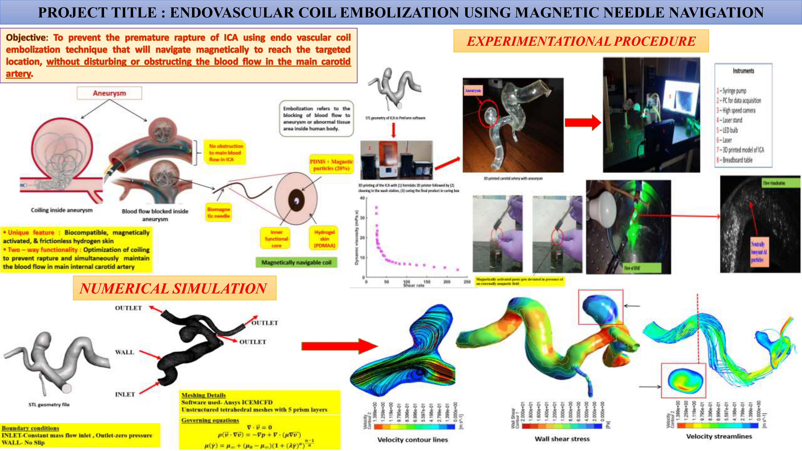
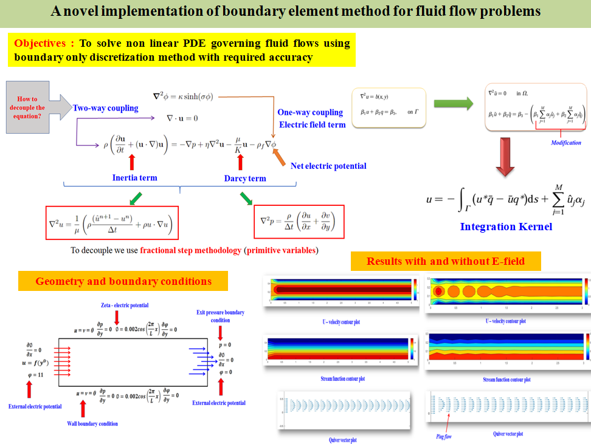

| Home | Experience | Publications |
|
|
Enhancing Electrokinetic Energy Harvesting via Rheology and Slip-Responsive Zeta Potential
Published in Proceedings of Royal Society A, 2026

This work presents a comprehensive theoretical framework to investigate the interaction between slip responsive zeta potential at the channel surface and the complex fluid rheology of the fluid medium modeled using the Carreau–Yasuda constitutive relation. The model in the present study consists of pressure-driven flow through a parallel-plate micro/nanochannel of width \( 2H \), filled with a symmetric monovalent electrolyte (e.g., NaCl, KCl). The channel walls are negatively charged and hydrophobic, characterized by a slip length \( L_s \) and a slip-dependent zeta potential \( \zeta(L_s) \). A pressure gradient drives ion motion, creating a streaming potential \( E_s \) and an opposing induced electroosmotic flow. The flow is considered fully developed, steady, and symmetric about the channel centerline.
This work develops a theoretical framework for pressure-driven electrokinetic flow in micro/nanochannels with slip-responsive zeta potential and non-Newtonian rheology (Carreau–Yasuda model), and studies its role in electrokinetic energy harvesting.
title={Enhancing Electrokinetic Energy Harvesting via Rheology and Slip-Responsive Zeta Potential},
author={Roy, Aritra and Poddar, Antarip},
year={2026}
}
A Computational Analysis of Flow Dynamics and Heat Transfer in a Wavy Patterned Channel using PINNs
Published in Physics of Fluids, 2025

This project is centered to explore wavy channel flows, significant in diverse applications, by solving steady-state incompressible Navier-Stokes equations using a physics-informed neural network (PINN). Symmetric and asymmetric wavy channels, including in-phase and out-phase wall shifts, are analyzed to model arterial structures. Key flow characteristics—velocity, pressure drop, and wall shear stress—are computed, with PINN results validated against CFD for high accuracy. The study also examines flow separation and recirculation in asymmetric channels. Additionally, heat transfer characteristics using both uniform and non-uniform boundary conditions were also analyzed.
This work studies symmetric and asymmetric wavy-channel flows by solving steady incompressible Navier–Stokes equations using PINNs, and analyzes velocity, pressure drop, wall shear stress, recirculation, and heat transfer behavior.
title={A computational analysis of flow dynamics and heat transfer in a wavy patterned channel using Physics Informed Neural Networks},
author={Roy, Aritra and Mukherjee, Ayan and Prasad, Balbir and Nayak, Ameeya Kumar},
year={2025}
}
Prospects of Energy-Efficient Power Generation System with Ammonia as Hydrogen Carrier
Published in International Journal of Hydrogen Energy, 2024

This research project investigates a novel approach using ammonia as a hydrogen carrier, which is decomposed to generate hydrogen for combustion, producing steam to power turbines. The process is simulated in ASPEN Plus, involving ammonia compression, decomposition in a fluidized bed reactor (FBR), product compression, hydrogen-air combustion, and power extraction via turbines. The study emphasizes the impact of parameters such as pressure, temperature, catalyst loading in the FBR, and air flowrate on the performance of individual components and overall system efficiency.
This project investigates ammonia as a hydrogen carrier for steam-based power generation and analyzes process performance and overall efficiency using ASPEN Plus simulations across key operating parameters.
title={Prospects of energy-efficient power generation system with ammonia as hydrogen carrier},
author={Roy, Aritra and Sengupta, Soumyajit and Samanta, Arun Kumar and Likhith, PVSS and Das, Sandipan Kumar},
year={2024}
}
Endovascular Coil Embolization using Magnetic Needle Navigation
Project work, IIT (ISM) Dhanbad

Endovascular coil embolization is a technique that prevents premature rapture of the internal carotid artery (ICA). In order to facilitate the surgery along with maintaining the flow of blood in ICA, we have proposed a magnetically navigable coil made of PDMS resin and hydrogel, flexible enough for smooth navigation and minimizing friction. This project was awarded Piyush Dutta Innovation award by NVCTI, IIT(ISM) Dhanbad.
Developed a magnetically navigable, flexible embolization coil (PDMS-hydrogel based) to support safe intracranial vascular navigation while maintaining blood flow. This work received the Piyush Dutta Innovation Award.
title={Endovascular coil embolization using magnetic needle navigation},
author={Roy, Aritra and Bhandari, Ajay},
year={2024}
}
A Novel Numerical Implementation of Boundary Element Method for Fluid Flow Problems
Thesis / Preprint status: NA

In this project, a novel implementation of boundary only discretization technique has been used to solve the non linear problems of fluid mechanics, whose Green's function doesnt exist or is very tedious to evaluate has been simulated to the desired degree of accuracy. This is inspired by Moin et. al. ideology of fractional step method.
This work explores a boundary-only discretization framework for nonlinear fluid mechanics problems using a novel implementation inspired by fractional-step ideas.
title={A novel numerical implementation of boundary element method for fluid flow problems},
author={Roy, Aritra and Das, Sandipan Kumar},
year={NA}
}
A Density Stratified DNS Simulation of Microplastics in Geophysical Turbulence Conditions
Ongoing
Ongoing project...
Project on direct numerical simulation of microplastics transport under density-stratified geophysical turbulence in ocean-like conditions.
title={A density stratified DNS simulation of microplastics in geophysical turbulence conditions prevailing in oceans},
author={Roy, Aritra and Govindarajan, Rama},
year={NA}
}